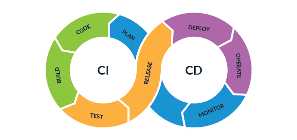

Projects

Automated CI/CD Pipeline Implementation
Designed and deployed a robust CI/CD pipeline to automate software testing and delivery workflows using Jenkins, Docker, Maven, Apache Tomcat, and Linux.
Technologies:
Jenkins • Docker • Maven • Linux • Apache Tomcat

Water Quality Monitoring & Risk Prediction
Developed a machine learning solution to analyze water quality across different Indian states by preprocessing environmental data and predicting water potability.
Technologies:
Python • Scikit-Learn • Pandas • Matplotlib

IMDB Movie Dataset Analysis
Performed exploratory data analysis on a dataset of over 1,000 movies to identify trends in genres, ratings, and revenue using Python visualization libraries.
Technologies:
Python • Matplotlib • Seaborn • Pandas